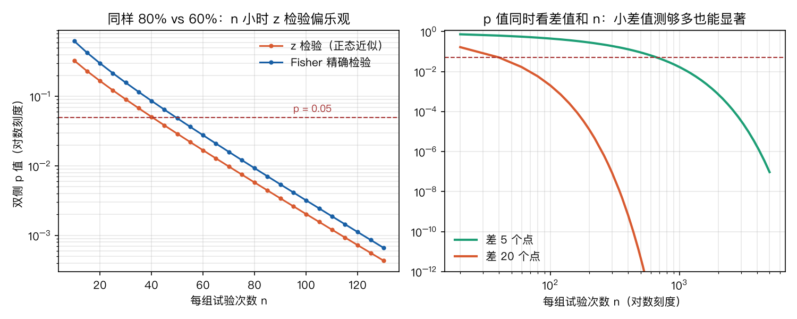
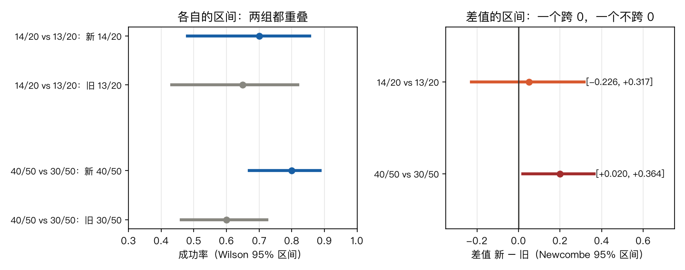
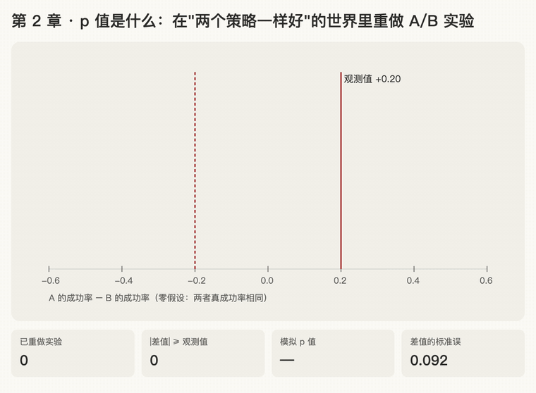

第 2 章 · 两个成功率比一比：差 5 个点、差 20 个点，哪个算数
本地运行
git clone https://github.com/wikieden/math-and-eval-stats
cd math-and-eval-stats/code/notebooks
pip install jupyterlab torch numpy
jupyter lab ch02_two_proportions.ipynb也可以下载后直接用 VS Code 打开 .ipynb 运行。需要 GPU 的章节在 Colab 里选「代码执行程序 → 更改运行时类型 → GPU」。
本章回答：新策略 14/20，旧策略 13/20，新的更好吗？差 20 个点（40/50 对 30/50）呢？"显著"到底是什么意思，p 值该怎么读？
讲解日期：2026-11-23 · 上一章：第 1 章 一个成功率有多准 · 下一章：第 3 章 要测多少次
对应原文：Kress-Gazit 等《Robot Learning as an Empirical Science》§6.4.2materials/text/papers/robot-eval-best-practices-2409.09491.txtL593–L596（13/20 对 14/20）；NIST e-Handbook §7.3.3materials/text/web/nist/prc33.txtL64–L111（Fisher 精确检验）；§7.1.3prc13.txt、§7.1.3.1prc131.txt（检验与 p 值）；Miller《Adding Error Bars to Evals》§4.1materials/text/papers/adding-error-bars-to-evals-2411.00640.txtL306 起（不配对比较）
本章缩写：SE = Standard Error（标准 / 误差）；CI = Confidence Interval（置信 / 区间）；H₀ 读作"H naught"，零假设（null hypothesis：没有差别的那个假设）；p 值 = p-value（probability value：概率 / 值）。全部缩写见 附录 · 缩写与术语表
讲解
第一步：差值也有误差，而且比单个更大（2026-11-23）
类比：两个人各自称体重，算体重差。 每台秤都有 ±1 kg 的误差，两人体重差的误差不是 ±1 kg，而是两份误差叠在一起，约 ±1.4 kg。
两组独立试验，差值 \(\hat p_1 - \hat p_2\) 的方差等于两份方差相加：
- 下标 1、2：两个策略（两组试验）。
- 根号里两项就是第 1 章的 \(SE^2\)，各算各的再相加。
- 95% 区间仍是 差值 \(\pm 1.96 \times SE_{diff}\)（Wald 版）。
例子（真实案例）：Kress-Gazit 等在一个"把能量棒放到托盘上"的任务上比较两个策略：A 成功 13/20，B 成功 14/20（L593–L595）。
| 量 | 算式 | 结果 |
|---|---|---|
| 差值 | 0.70 − 0.65 | +0.05 |
| \(SE_{diff}\) | \(\sqrt{0.7\times0.3/20 + 0.65\times0.35/20} = \sqrt{0.021875}\) | 0.148 |
| Wald 95% CI | \(0.05 \pm 1.96 \times 0.148\) | [−0.240, +0.340] |
| Newcombe 95% CI（用两个 Wilson 区间拼，小样本更稳） | 见代码 | [−0.226, +0.317] |
区间从 −24 个点跨到 +34 个点，包含 0。B 可能比 A 好 30 个点，也可能差 20 多个点。原文结论是"cannot state that one policy outperforms the other"（L596）。
一句话：比较两个成功率，先算差值的区间；区间跨过 0，就说不出谁更好。
第二步：假设检验与 p 值（2026-11-23）
类比：法庭上的"无罪推定"。 先假定被告无罪（两个策略一样好），再看证据（观测到的差值）在"无罪"的世界里有多罕见。罕见到一定程度，才推翻无罪假定。
- 零假设 H₀：两个策略的真成功率相同，\(p_1 = p_2\)。
- p 值：如果 H₀ 成立，重做实验，看到"至少这么大"的差值的概率。
- 约定：p < 0.05 叫"在 5% 水平上显著"，推翻 H₀。
双比例 z 检验：H₀ 下两组成功率一样，所以用合并成功率算标准误：
- \(\bar p\)：读作"p bar"，两组合在一起的成功率。
- \(z\)：差值是"零假设下标准误"的几倍。\(|z| > 1.96\) 对应双侧 p < 0.05。
例子：
| 案例 | \(\bar p\) | \(SE_0\) | z | 双侧 p |
|---|---|---|---|---|
| 14/20 vs 13/20 | 27/40 = 0.675 | 0.148 | 0.338 | 0.736 |
| 40/50 vs 30/50（编的） | 70/100 = 0.70 | 0.0917 | 2.182 | 0.029 |
第二个例子差 20 个点、每组 50 次，p = 0.029 < 0.05，显著；它的差值区间 [+0.025, +0.375] 也不跨 0。区间不跨 0 和 p < 0.05 是同一件事的两种说法（Wald 版近似一致）。
一句话：p 值回答"假如两者一样，这么大的差有多常见"；常见（p 大）就不能说有差别。
第三步：小样本用 Fisher 精确检验（2026-11-23）
z 检验靠正态近似，n = 20 时不太准。Fisher 精确检验不近似：固定两组的总次数和总成功次数，按超几何分布精确算"这么极端或更极端"的表格出现的概率。NIST 称它"excellent nonparametric technique"（L67），适合 2×2 表（L74 起是例子）。
例子：
| 案例 | z 检验 p | 模拟 p（零假设下重做 20 万次） | Fisher p |
|---|---|---|---|
| 14/20 vs 13/20 | 0.736 | ≈ 0.87 | 1.000 |
| 40/50 vs 30/50 | 0.029 | ≈ 0.038 | 0.049 |
n 小时 z 检验偏乐观（p 偏小）。40/50 对 30/50 用 Fisher 是 0.049，刚好压线；压线的结论很脆弱，多测几次可能就翻了。
场景代码：评测脚本里直接调库，三种检验一起报：
from scipy.stats import fisher_exact
from statsmodels.stats.proportion import proportions_ztest, confint_proportions_2indep
k, n = [40, 30], [50, 50] # 新、旧策略的成功次数和总次数
z, p_z = proportions_ztest(k, n) # 第二步：双比例 z 检验（合并 p）
_, p_f = fisher_exact([[40, 10], [30, 20]]) # 第三步：Fisher 精确检验，表是 [[成, 败], [成, 败]]
lo, hi = confint_proportions_2indep(40, 50, 30, 50, method="newcomb") # 第一步：Newcombe 差值区间
print(f"差 = {40/50 - 30/50:+.2f} [{lo:+.3f}, {hi:+.3f}]，z 检验 p = {p_z:.3f}，Fisher p = {p_f:.3f}")

图 2-1 · 左边是同样 80% vs 60%，每组次数变化时两种检验的 p 值：z 检验一直比 Fisher 小，小样本时更容易"显著"。右边对应第五步：p 值同时取决于差值和 n，差 5 个点每组测到七百次左右也会 p < 0.05。
一句话：每组几十次的机器人评测，报 Fisher 精确检验的 p 值。
第四步：两个区间重叠 ≠ 差异不显著（2026-11-23）
常见的偷懒判断："两个成功率的 95% 区间有重叠，所以没差别。"这不对。
例子（40/50 vs 30/50）：
| Wilson 95% CI | |
|---|---|
| 40/50 | [0.670, 0.888] |
| 30/50 | [0.462, 0.724] |
两个区间在 0.670–0.724 之间重叠，但第二步算出 z 检验 p = 0.029。原因：两份误差合起来是 \(\sqrt{SE_1^2 + SE_2^2}\)，小于 \(SE_1 + SE_2\)。看"重叠"等于把误差算成了 \(SE_1 + SE_2\)，太保守。
反过来：区间不重叠，差异一定显著；区间重叠，要算差值区间才知道。

图 2-2 · 左边两组各自的 Wilson 区间都重叠；右边差值的 Newcombe 区间，14/20 vs 13/20 跨过 0，40/50 vs 30/50 不跨 0。只看左边会把第二组也判成"没差别"。
一句话：比较两组，看差值的区间，不看两个区间重不重叠。
第五步：p 值不是什么（2026-11-23）
| 错误说法 | 为什么错 |
|---|---|
| "p = 0.03，所以新模型更好的概率是 97%" | p 值是"假设一样时看到这种数据的概率"，不是"假设成立的概率"。后者要用贝叶斯（第 5 章） |
| "p = 0.74，说明两个模型一样好" | 不显著只说明这次实验分不出来。14/20 vs 13/20 的差值区间是 [−24, +34] 个点，什么都可能 |
| "p 越小，提升越大" | p 同时取决于差值和样本量。n 足够大，0.5 个点的差也能 p < 0.001 |
| "测完一看 p = 0.06，再多测 10 次看看" | 边测边看、到显著就停，会把假阳性率抬高（第 6 章） |
一句话：报结论时三样一起给：差值、差值的区间、p 值；只给 p 值等于什么都没说。
动画演示：在"两者一样"的世界里重做实验

可交互版：animations/02-null-distribution.html（滑块：每组次数 n、观测到的差值、合并成功率）
怎么看： 1. 两个策略的真成功率设成一样（H₀，第二步）。每一帧重做一轮 A/B 实验，把得到的差值落进直方图。 2. 红色竖线是你实际观测到的差值；红色区域（|差值| ≥ 观测值）占的比例就是模拟出来的 p 值（第二、三步）。 3. 每组 20 次时，差 5 个点落在直方图正中间，很常见；每组 50 次、差 20 个点时，红色区域只剩 3–4%。 4. 把 n 拖大，直方图变窄（第一步：SE ∝ 1/√n），同样的差值就变得罕见。
练习与作答记录
题 1（锚点题，第一、二、三步）：团队报告"新模型 21/30，旧模型 18/30，提升 10 个点"。（a）算差值的 Wald 区间；（b）算双比例 z 检验和 Fisher 精确检验的 p 值；（c）用一句话告诉团队能不能下"新模型更好"的结论。
作答：（待作答）
题 2（第四步）：同事说"两个模型的 95% 区间不重叠，所以差异显著"；另一个同事说"两个区间重叠了，所以差异不显著"。各自对不对？
作答：（待作答）
题 3（第五步）：一篇论文写"我们的方法 p = 0.04，显著优于基线"，只报了这一个数。你会追问哪三件事？
作答：（待作答）
口诀
两秤称重误差叠，差值区间跨零别下结论；
无罪推定先当一样，p 值问的是有多罕见；
小样本用 Fisher 算，区间重叠不算数；
差值、区间、p 值，三样一起报。
本章复习卡片
ST06–ST10（必须记住的公式和概念）。练习做完后，按答错、卡住的地方补上。
附录 · 延伸阅读
留给以后深入学习用，不影响本章主线。★ 是建议先读的。
推荐阅读
| 读什么 | 读哪里 | 读它为了什么 |
|---|---|---|
| ★ Kress-Gazit 等《Robot Learning as an Empirical Science》 | §6.4 L577–L610 | 真实的 A/B 评测怎么设计、结论怎么写 |
| ★ NIST e-Handbook §7.3.3 | prc33.txt L64–L240 |
Fisher 精确检验的原理、例子和 Tocher 修正 |
| NIST e-Handbook §7.1.3–7.1.3.1 | prc13.txt、prc131.txt |
检验、临界值、p 值的定义 |
| Miller《Adding Error Bars to Evals》 | §4.1 L306–L324 | 不配对比较的标准误；下一节 §4.2 是配对（第 4 章） |
| 《读懂 Gemini Robotics》第 1 章 | 读官方数字三问 | 拿到官方 A/B 数字时先问什么 |
数学原理
- 独立随机量的方差相加：\(\mathrm{Var}(X - Y) = \mathrm{Var}(X) + \mathrm{Var}(Y)\)（独立时）。所以差值的 SE 是两份 SE 的平方和开根号（第 8 章讲方差的性质）。
- 超几何分布：Fisher 检验固定行和、列和，在 N 个球（K 个"成功"）里抽 n 个，恰有 k 个成功的概率 \(\binom{K}{k}\binom{N-K}{n-k}/\binom{N}{n}\)。
- 检验与区间的对偶：p < 0.05 当且仅当 95% 区间不含零假设的值（同一套近似下）。
公式清单
| 公式 | 意思 |
|---|---|
| \(SE_{diff} = \sqrt{\hat p_1(1-\hat p_1)/n_1 + \hat p_2(1-\hat p_2)/n_2}\) | 差值的标准误 |
| \((\hat p_1 - \hat p_2) \pm 1.96\,SE_{diff}\) | 差值的 Wald 95% 区间 |
| \(\bar p = (k_1+k_2)/(n_1+n_2)\) | 零假设下的合并成功率 |
| \(z = (\hat p_1 - \hat p_2) / \sqrt{\bar p(1-\bar p)(1/n_1+1/n_2)}\) | 双比例 z 统计量 |
| p 值 = P(差值至少这么极端 ∣ H₀) | p 值的定义 |
代码对照：把本章的数字用代码算一遍
Python + NumPy + SciPy。代码在仓库本地
math-and-eval-stats/solutions/chapter-code/ch02_two_proportions.py，配套测试tests/test_ch02.py。Mac 上直接能跑，不需要 GPU：
bash cd math-and-eval-stats/solutions/chapter-code uv run python ch02_two_proportions.py uv run pytest tests/test_ch02.py
讲义 ↔ 代码：
| 讲义 | 公式 | 写法 | 跑出来 |
|---|---|---|---|
| 第一步 | \(SE_{diff}\)、Wald、Newcombe | diff_se、diff_wald_ci、newcombe_ci |
14/20 vs 13/20：0.148、[−0.240, +0.340]、[−0.226, +0.317] |
| 第二步 | 合并 p 的 z 检验 | two_proportion_z |
z = 0.338、p = 0.736；40/50 vs 30/50：z = 2.182、p = 0.029 |
| 第二步 | 模拟 p 值 | simulate_null_p |
≈ 0.87；≈ 0.038 |
| 第三步 | Fisher | fisher_p |
1.000；0.049 |
| 第四步 | 两个 Wilson 区间 | wilson_ci（第 1 章） |
[0.670, 0.888]、[0.462, 0.724] |
关键几行：
pooled = (k1 + k2) / (n1 + n2) # 零假设：两组一样，合在一起估成功率
se0 = math.sqrt(pooled * (1 - pooled) * (1 / n1 + 1 / n2)) # 零假设下差值的标准误
z = (k1 / n1 - k2 / n2) / se0
p = 2 * norm.sf(abs(z)) # 双侧：两边的尾巴都算
fisher_exact([[k1, n1 - k1], [k2, n2 - k2]])[1] # Fisher：表的每行是 [成, 败]
代码里才看得到的 3 件事：
- z 检验的标准误用合并的 \(\bar p\)，区间的标准误用各自的 \(\hat p\)，两个数不一样（14/20 vs 13/20 恰好都约 0.148，40/50 vs 30/50 是 0.0917 对 0.0894）。
- 模拟 p 值比 z 检验大很多（0.87 对 0.74），因为差值只能取 0.05 的整数倍，"≥ 观测值"把等于的情况也算进去了；n 小时离散性很明显，这正是该用 Fisher 的原因。
fisher_exact默认双侧；表的写法是 [成, 败]，写成 [成, 总数] 是常见 bug。
自己改一改（不影响练习答案）：
- 把 40/50 vs 30/50 改成 80/100 vs 60/100（成功率不变，样本翻倍），看 p 值变成多少。
- 把 14/20 vs 13/20 改成 140/200 vs 130/200，看差 5 个点要多少次才显著（第 3 章会算准确数）。
- 对照 notebook，用
simulate_null_p画出零假设下的差值直方图。